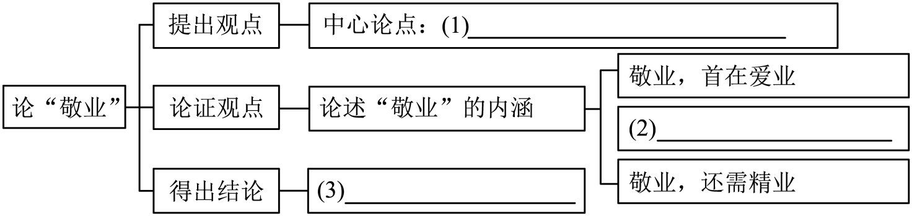

练习 · 论述类文本阅读
敬业绘就“最美”人生
借助思维导图梳理敬业主题，并分析事实与道理论据。
导读
敬业绘就“最美”人生。阅读时留意不同材料、事例与观点之间的联系。
原文
原文按结构分节；随文内容可定位至对应段落。
敬业之道：从爱业、勤业、精业三个方面论述敬业精神。
班级开展“敬业·筑就不凡”小组合作学习活动。请参与并完成下面小题。
敬业绘就“最美”人生
马祖云
①“最美医务工作者”“最美公务员”“最美志愿者”“最美铁路人”……一段时间以来，“最美”成为互联网上的热词。一个个“最美”人物，犹如一颗颗璀璨的明珠，辉映在各条战线上。他们以精彩的故事、不凡的业绩，展现了砥砺奋进的姿态、绚丽出彩的人生，生动地诠释了令人感佩的敬业精神。
②爱岗敬业，是习近平总书记倡导的劳模精神的重要内涵。共和国宏伟大厦是由一个个行业、一个个岗位的“砖瓦”筑就的。立足平凡岗位、人人争先创优，“百职如是，各举其业”，方能众志成城、集聚众力。三百六十行，倘若每个人都能立足平凡岗位，齐心敬业、履职尽责、勤勉奉献，我们就能汇聚起强大正能量，为社会主义现代化事业注入蓬勃生机与活力。正因此，敬业精神既关乎个人成长成才，更关乎国家的兴盛、民族的复兴。奋进新征程，我们应该怎样以行动诠释敬业精神？从某种意义上讲，敬业之道蕴含爱业、勤业、精业之精神，值得我们为之践行。
③敬业，首在爱业。对本职工作的热爱，是一种朴素的职业情感。爱之愈深，则敬之愈真。爱岗，彰显的是乐业，展现的是执着。葆有这样的职业观，就会自觉把工作当事业干，将小我融进大我，在小舞台上演出大戏剧。从奋战在脱贫攻坚一线的驻村书记，到无惧风险、完成特高压带电作业的“禁区勇士”……观察那些“最美”人物，他们皆是干一行爱一行的榜样，把本职工作做到极致，达到了“山登绝顶我为峰”的境界。事实证明，“专心致志，以事其业”，才能平淡中见奇、寻常中出彩，在新时代的大舞台上绽放个人梦想。
④敬业，要在勤业。业精于勤荒于嬉，立足本职岗位勤勉工作，是一种职业操守、职业品格。勤劳、勤勉、勤恳，意味着务实奋斗。事业的成功，不是等得来、喊得来的，而是拼出来、干出来的。无论从事何种行业，都需要用奋斗铸就“最美”，以拼搏实现理想。获评全国“最美公务员”的浙江“90后”科技警察钟毅，为了跟疫情赛跑，争分夺秒攻关，使“健康码”成功投入抗疫，并迅速推广到全国。唯拼搏者不凡，唯实干者出彩，唯奋斗者英勇。一勤天下无难事，勤勉奋斗谱写最美壮歌。
⑤敬业，还需精业。精通业务，体现着职业上的价值追求。在科技日新月异、竞争日趋激烈的今天，应当努力求精通、谋创新、出精品。这需要涵养“择一事终一生”的倾心专注，“偏毫厘不敢安”的一丝不苟，“千万锤成一器”的坚持不懈。各行各业的“最美”人物，往往都是追求卓越、业务精进。全国劳模潘从明能从铜镍冶炼的废渣中提取8种以上稀有贵金属，只看溶液颜色便能精确判断99.99％的产品纯度。他获得国家科技进步奖的背后，是数十年如一日“找难题、啃难点、攻难关”的呕心沥血。经验表明，在精益求精的道路上，只有坚韧不拔的勇者，才能登上风光无限的顶峰。
⑥如果说事业是航船，那么敬业就如同风帆。敬业笃行，推进人生实现从平凡到伟大、从优秀到卓越。激扬敬业精神，扬帆远航、乘风破浪，我们必能抵达梦想的彼岸。（选自《人民日报》）
第1题 · 论证结构
同学们制作了下面的思维导图，请帮他们填写空缺的部分。

参考答案1展开 / 收起
参考作答
（1）敬业绘就“最美”人生；
（2）敬业，要在勤业；（3）激扬敬业精神，推进个人成长与事业发展。
审题与考查点
结合题目限定，回到材料寻找依据，再按要求作答。
文本分析
推导查看证据 ↗
开头由“最美”人物引出敬业，中间分别论述爱业、勤业、精业，最后号召践行敬业精神。
第2题 · 论据分析
活动中，同学们围绕“如何使议论言之有据”展开了讨论，请结合选文内容，完成组长发言。
组长：议论不仅要提出观点，还要有能证明观点的材料。言之有据，才能让人信服。
小语：论据要与论点紧密契合，不能偏离核心。选择的论据需精准支撑论点，每一个材料都要能直接体现论点的内涵。
小文：的确，材料也要真实准确，经得起推敲。如本文提到的各类“最美”人物事迹，都是真实存在的，且符合社会对敬业精神的普遍认知。
小美：我再补充一点，要增强文章的说服力，还要注意材料的丰富性，事实论据和道理论据综合运用。组长，你能就这一点，结合本文内容展开分析一下吗？
组长：大家的发言都很精彩，现在我来解答小美的问题。______
参考答案2展开 / 收起
参考作答
事实论据：钟毅等人在岗位上勤勉攻关，支持“勤业”；潘从明长期精研业务，支持“精业”。道理论据：“业精于勤荒于嬉”等概括勤勉与精进的关系，帮助读者理解观点。二者配合，使论述有事例也有理由。
审题与考查点
结合题目限定，回到材料寻找依据，再按要求作答。
文本分析
推导查看证据 ↗
钟毅和潘从明的事例分别支撑勤业和精业；相关古语概括勤勉与精进的关系。说明论据作用时要联系它支持的具体观点。